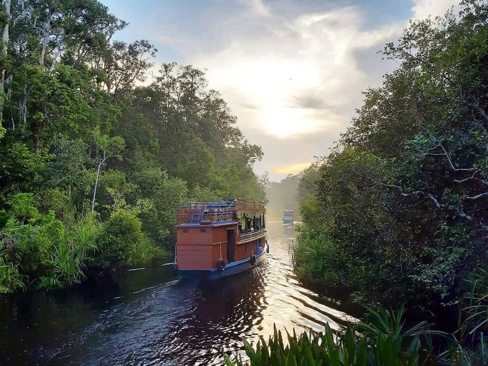
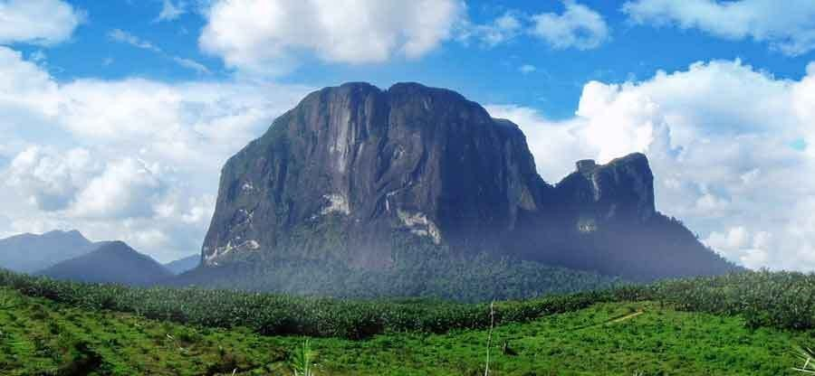

|
Pulau Derawan |
Berada di Kalimantan Timur, pulau ini memiliki beberapa objek wisata yang menakjubkan. Terdapat batu sepanjang 18 meter berjarak 10 meter di bawah permukaan laut, yakni Blue Tigger Wall, salah satu yang terbaik untuk menyelam.
Tak hanya itu, berenang bersama ubur-ubur juga menjadi daya tarik lain utamanya. Snorkeling atau diving pun akan membuat liburanmu jadi lebih berkesan. |
kalimantan Timur |
|  |
Taman Nasional Tanjung Puting |
Taman Nasional ini menjadi salah satu taman nasional terbaik dan rumah bagi orangutan. Mereka tampak sering bergelantungan dari pohon ke pohon. Luasnya sekitar 415.040 hektare. Kamu bisa melakukan berbagai aktivitas seru di sini.
Terdapat Sungai Sekonyer yang bisa dikelilingi dengan transportasi semacam kapal, klotok namanya. Selama perjalanan, kamu bisa mengamati orangutan yang sedang asyik bergelantungan.
Ada pula macan tutul, kancil, dan satwa-satwa menggemaskan lainnya. Menjelang sore, pemandangan Sungai Sekonyer semakin indah karena pantulan sunset. |
Kalimantan |
|  |
Bukit Kelam |
Bukit Kelam terletak di antara dua sungai besar, Sungai Melawi dan Sungai Kapuas. Bukit yang berada di Kalimantan Barat ini sebenarnya adalah sebuah batu. |
kalimantan Barat |